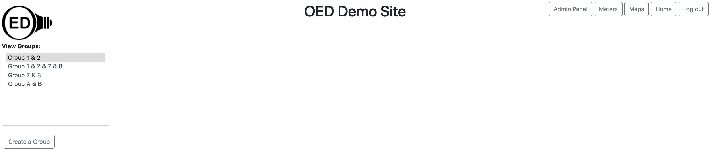
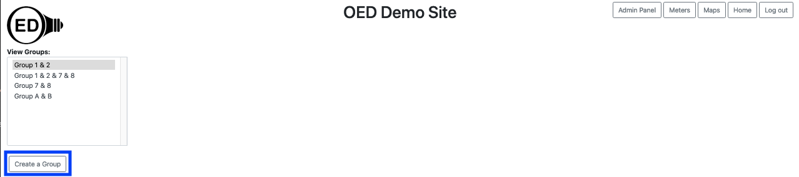
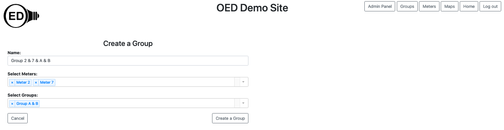
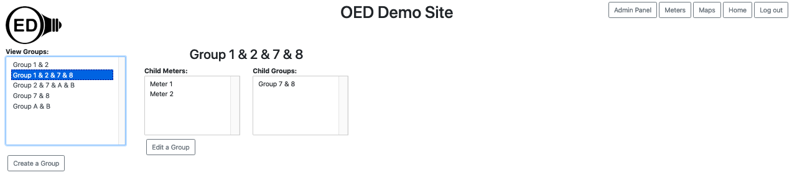
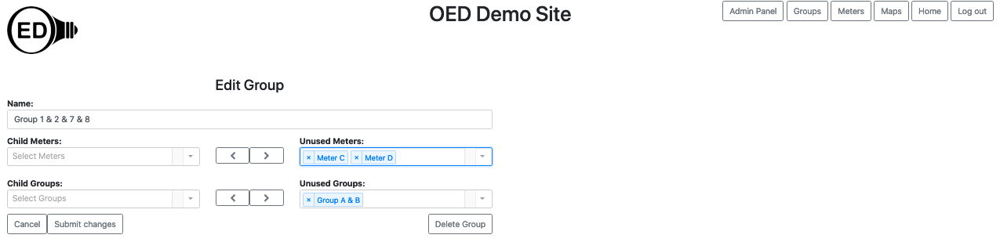
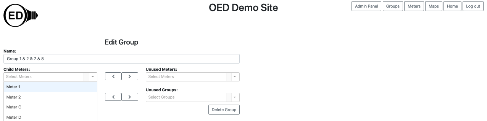

OED Documentation
Group Viewing
Version V0.6.0
The latest version of this page is V1.0.0.
Documentation overview
Admin documentation
Information
Site Management
Data Acquisition
Site Installation
User documentation
Documentation versions for this page
These features are only available to select people who oversee the OED site (called admins) so this information is not usually of interest to a general user.
Overview
If you are logged in as an admin and visit the "Groups" page then you can see everything a regular usage can see as shown on the group viewing page as well as the ability to edit groups. This is shown in the figure below. For general information, see the graphing groups page. 
Usage
Click the "Create a group" button (highlighted with a blue box in the next figure). This will allow you to make a new group and take you to the appropriate page. 
Use the name field to give this group a unique name that will make sense to users. Use the "Select Meters:" and "Select Groups" dropdown menus as you would on any page to select the meters and groups to include within the new group. The next figure shows what creating a group named "Group 1 & 2 & 7 & 8" that includes Meter 1, Meter 2 and Group 7 & 8 would look like. 
When you are done, click the "Create a group" button. If you want stop the process, click the "Cancel" button. Either way you will be returned to the groups page. Once you create a new group, it will show up in the list on the group page. This group is highlighted in the next figure (by clicking on it) to see that the group contains the meters and group expected. 
If you click the "Edit a group" button next to the "Create a group" button then you are able to edit the group highlighted in the list (in this case the new group we just created). This takes you to another page. Next the "Unused Meters:" dropdown menu was used to select Meter C and Meter D. The "Unused Groups:" dropdown menu was used to select Group A & B. Note that both of these menus do not include any meters or groups already included in this group or just selected. The screen looks as in the figure below. 
Now you can click the left arrow on the meter line to add the two meters selected. The same process on the group line to add the one group selected. The next figure shows the result where the "Child Meters": dropdown menu was used to see that there are now four meters in this group (original two plus two just added). Note it probably would have been a good idea to change the name of this group to reflect its new members. This could have been done on the edit page. 
If you click the "Submit changes" button then the updated group will be saved. If you click the "Cancel" button then the changes will be discarded.
You can remove meters and/or groups from this group by selecting the "Child Meters:" or "Child Groups:" and clicking the right arrow. This is very similar but the reverse of the process above.
If you want to completely remove this group then click the "Delete Group" button.
Details
Note that when you edit a group that is included in another group, the changes to the group impact the other group as well.
Groups will have features similar to meters in the near future and admins will be able to edit them similar to meters.